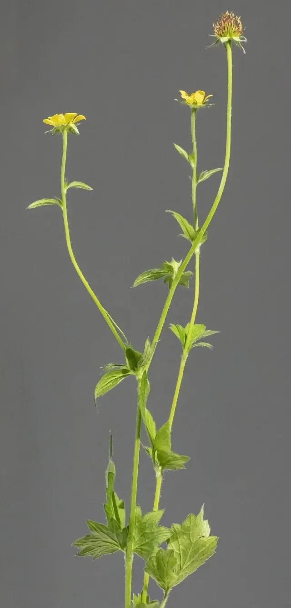

Root or shoot · Mar–Oct
Wood avens root
Geum urbanum
Also called Geel nagelkruid
Wood avens root is a root or shoot you can forage from March to October across the Netherlands. Common woodland weed with small yellow flowers and burred seed heads; roots smell of cloves.

Caution. Dig only with permission.
When is wood avens root in season in the Netherlands?
Wood avens root is usually in season March to October. Timing shifts with weather, latitude and altitude.
Where does wood avens root grow in the Netherlands?
Wood avens root grows across the Netherlands. Regions: Coast, dunes and Wadden, West, East, South.
How do you recognise wood avens root?
Common woodland weed with small yellow flowers and burred seed heads; roots smell of cloves.
How do you harvest wood avens root?
Only dig roots where you have the landowner's permission, since uprooting wild plants is illegal in many places. Take a few from a large patch and backfill the hole.
How do you eat wood avens root?
Root as a clove substitute in mulled wine and desserts.
How do you store wood avens root?
Dry roots.